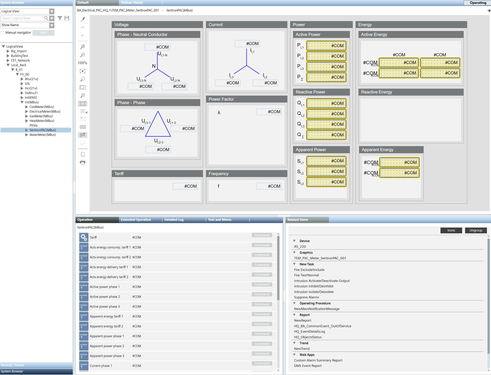
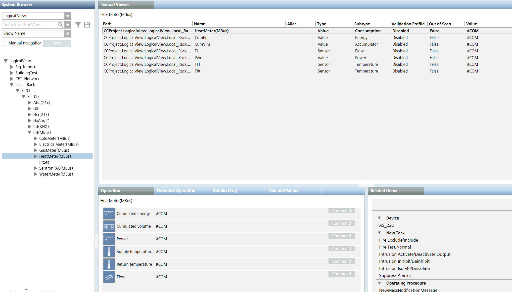
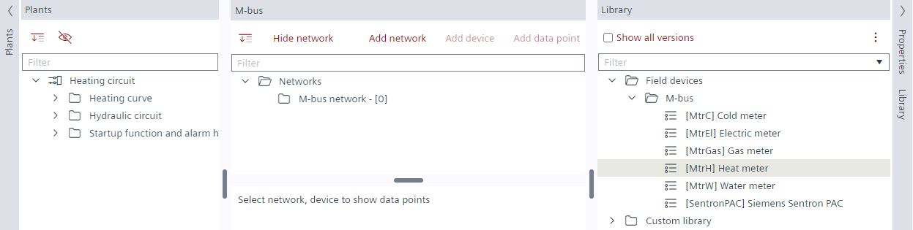
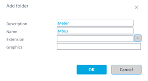
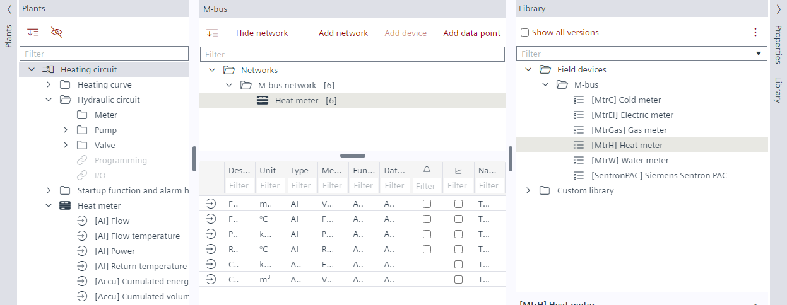
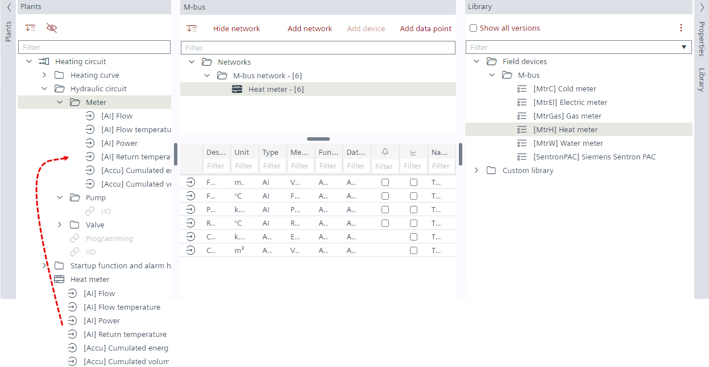
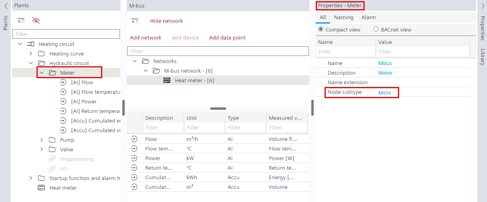

为 Desigo CC 图形准备 M-bus 仪表
对于 Desigo CC 中仪表的图形表示，数据点为Logical View必须正确分配给仪表。
Graphic example SentronPAC for M-bus:

Text example heat meter for M-bus

- A plant, for example, Hydraulic circuit, is available in ABT Site.

- In the Plants navigation view, select Hydraulic circuit.
- Right-click and select Add folder.
- In the Add folder dialog box, enter a name and a description.

- Select the Library view on the right.
- From the Field devices > M-bus folder, drag a meter device from the library to the M-bus network.

- In the Plants navigation view, select all the data points below the Heat meter.
- Drag all the data points to the Meter folder.

- In the Plants navigation view, select the Meter folder.
- Select the Properties tab on the right.
- The Properties view shows the meter properties.
- Select the Node subtype property.
- Enter the library short name, for example, MtrH.

- The meter is configured for the Logical View in Desigo CC.
Support short names for M-bus
简称 | 描述 |
|---|---|
MtrC | 冷量表 |
MtrEl | 电表 |
MtrGas | 燃气表 |
MtrH | 热量表 |
MtrW | 水表 |
SentronPAC | 西门子 Sentron PAC |